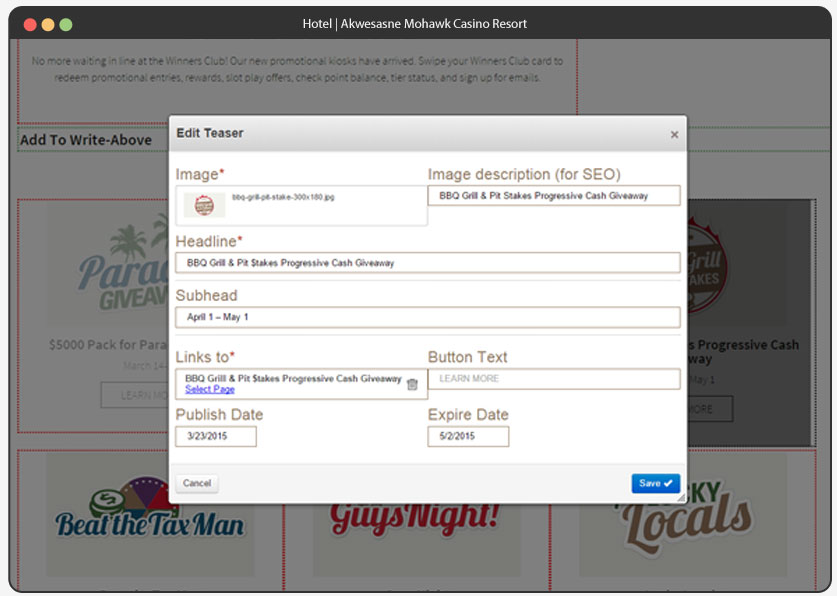
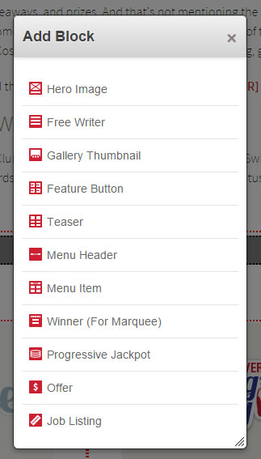
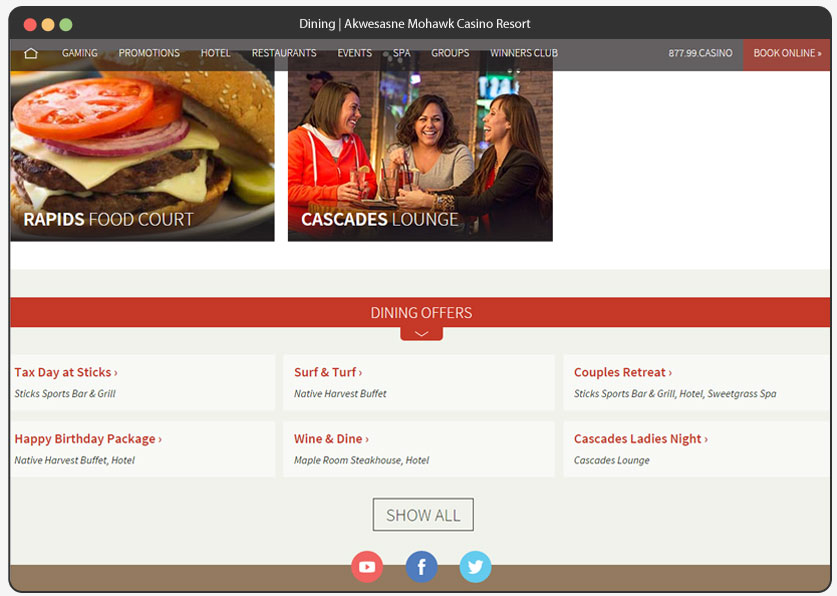

Akwesasne Mohawk casino in upstate New York had a website that didn't fit their casino. Everything looked dark and unwelcoming, and the business wasn't able to keep content fresh and relevant. When the talks began, the site was only a year old, but built on poor planning it looked and functioned like a relic. An entirely new approach was in order.
Let's make this so it makes sense.
Any casino website is going to have a lot of time-sensitive parts and competing interests, so a huge goal to the Mohawk website was to make client updates as intuitive and simple as possible. To that end, I chose Concrete5 as the site's foundation and content management system.
Using C5 meant custom building a lot of non-standard pieces to support the needs of the business, but the end result is that the pages are edited on the pages themselves, using a library of block types built individually for the casino.
Protecting design standards.
A site should continue to look good well after the design has been approved, and that means thinking about content beforehand and developing standards as to how that content should always be presented. In the case of Akwesasne Mohawk, every piece of content has its own standard layout, with required and optional fields. When a new item needs to be added, the content manager shouldn't have to decide how that content looks, and consistency and brand guidelines can be enforced.
A page has a job to do.
A pretty homepage is great, but that doesn't make for a site's user experience. Users can get to a site from a whole lot of different vectors, and a well considered experience should strain to deliver the right information to that view.
Mohawk delegates jobs to pages, and supports those jobs as best as it can. So wherever you land, whatever you're looking for, the site wants to help you get there. And nothing gets stale.
Success can (sometimes) be duplicated.
Launch of the new website went incredibly smoothly, traffic increase was immediate and dramatic, and the new site was able to support a lot of new efforts in search engine marketing and customer acquisition. When an event or promotion has unexpected interest levels, that information is learned and acted upon quickly.
Concrete5 is a big CMS, and requires some customization to get it to perform in modern and expected ways, but I think it's worth it in this case. When limitations are made to streamline rather than hamper innovation, I think I've done a good job.